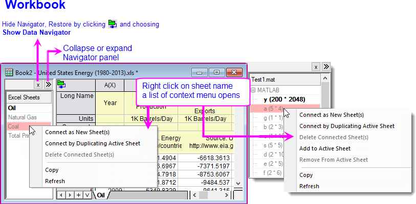
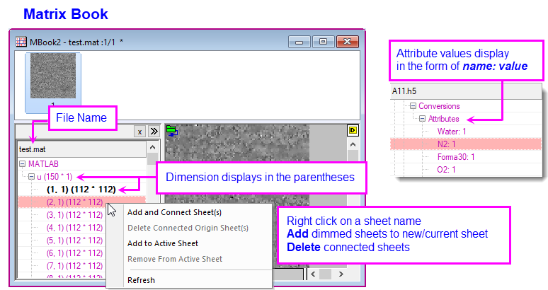
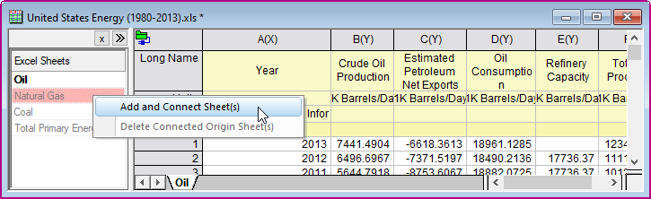
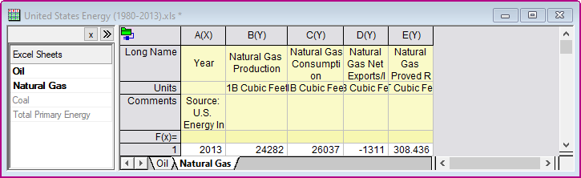

Datennavigator
Data_Navigator
Der Datennavigator ein minimierbares Bedienfeld, das automatisch zur Arbeitsmappe/Matrixmappe hinzugefügt wurde, wenn Sie mehrseitige Dateien wie Excel, MATLAB oder Origin-Projekte verbinden.
- 
- 
Mit mehrseitigen Dateien verbinden
- Wählen Sie bei aktiver Arbeits- oder Matrixmappe Daten: Mit Datei verbinden//Mit Web verbinden und navigieren Sie zu Ihrer mehrseitigen Datei.
- Wählen Sie im aufgerufenen Dialog die Datenstruktur (Blatt, Array etc.), die Sie importieren möchten, klicken Sie dann auf OK, um den Browser zu schließen und das ausgewählte Blatt, Array etc. zu importieren.
- Öffnen Sie das Feld des Datennavigators (falls es nicht geöffnet wird).
- Um nicht verbundene Blätter, Arrays etc. in die aktuelle Arbeits- oder Matrixmappe zu importieren, klicken Sie mit der rechten Maustaste auf die gedimmten Objekte (Shift + Klicken zum Auswählen mehrerer Elemente) im Feld Datennavigator und wählen Sie das gewünschte Menüelement.
| Als neue Blätter verbinden |
Importieren Sie ausgewählte Objekte als neue Blätter mit Standardeinstellungen. |
| Durch Duplizieren des aktiven Blatts verbinden |
Importieren Sie die ausgewählten Objekte als neue Blätter mit den Einstellungen (einschließlich Umgang mit Metadaten, partieller Import, LabTalk-Skripte, die nach dem Import ausgeführt werden etc.) des aktuellen Blattes. Beachten Sie, dass die Aktionen nach dem Import, wie das Löschen einiger Spalten, auch als Teil der aktuellen Blatteinstellungen gespeichert werden. |
| Zu aktivem Blatt hinzufügen |
Hängen Sie die ausgewählte Tabelle(n) als neue Spalten über die Standardimporteinstellungen an das aktuelle Blatt an. |
Beispiel: Mit mehrseitiger Excel-Datei verbinden
- Öffnen Sie eine neue Arbeitsmappe und wählen Sie Daten: Mit Datei verbinden: Excel.
- Navigieren Sie zum <Origin-Programmordner>\Samples\Import and Export\United States Energy (1980-2013).xls und klicken Sie auf Öffnen.
- Belassen Sie Excel-Blatt = Oil und Hauptheaderzeilen = Auto. Beachten Sie, dass die Spaltenbeschriftungen auch aktiviert sind und Langnamen = 1 und Einheiten = 2 automatisch erkannt werden. Klicken Sie zum Importieren der Daten auf OK.
- Um weitere Blätter (z. B. Natural Gas) zu verbinden, klicken Sie mit der rechten Maustaste auf ein abgeblendetes Blatt im Feld des Navigators und wählen Sie Blatt/Blätter hinzufügen und verbinden.

Auf diese Weise wird eine neue Registerkarte Natural Gas zur Arbeitsmappe hinzugefügt und eine Verbindung zu den Daten im Excel-Blatt hergestellt.

|
Hinweis: Daten, die per Konnektor importiert werden, sind von der Bearbeitung gesperrt und werden nicht mit der Projektdatei gespeichert. Per Standard geschieht dies, wenn die Größe der Importdatei ≥ 500 kB. Siehe diese Themen:
|